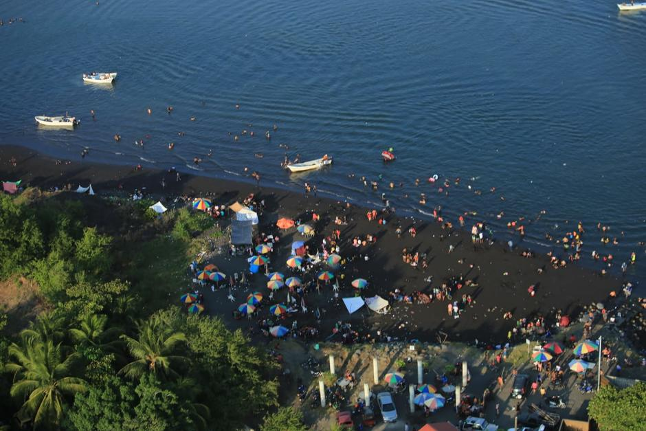

Implementar programas de reciclaje para separar y procesar materiales reciclables.
"Explora el complejo mundo de los residuos industriales en Puerto San José. Descubre cómo su gestión adecuada es esencial para preservar el medio ambiente y garantizar la salud pública. Conoce las implicaciones, desafíos y las soluciones innovadoras que implementamos para un futuro más sostenible."
Causa: La industrialización y el crecimiento económico en Puerto San José han llevado a un aumento significativo en la producción de residuos industriales. Estos residuos provienen de procesos de manufactura, construcción y otras actividades industriales, generando un desafío ambiental y de salud pública.
Efecto: La incorrecta gestión de estos residuos puede tener consecuencias graves para el entorno natural y la salud de la comunidad. Contaminación del agua y suelo, emisiones nocivas y riesgos para la biodiversidad son algunos de los efectos negativos. Un adecuado sistema de gestión es esencial para mitigar estos impactos y promover un desarrollo sostenible en la región.
Implementar programas de reciclaje para separar y procesar materiales reciclables.
Establecer instalaciones adecuadas para el tratamiento y disposición final de residuos peligrosos y no peligrosos.
Fomentar la reutilización de productos cuando sea posible.
Implementar tecnologías modernas para el tratamiento y gestión de residuos, como la incineración controlada o la biotecnología.
Realizar auditorías periódicas para evaluar y mejorar los procesos de gestión de residuos, identificando áreas de mejora.